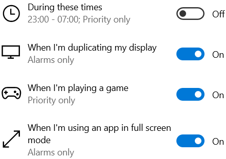

Focus assist
Choose which notification you'd like to see and hear so you can stay focused.The rest will go straight to action center where you can see them any time.
Off
Get all notifications from your apps and contacts.
Priority only
See only selected notifications from the priority list.The rest will go staright to action center.
Customize your priority list
Alarms only
Hide all notifications,except for alarms
Automatic rules
Choose the times and activities when you don't want to be disturbed,and focus assist will turn on automatically.

Show me a summary of what I missed while focus assist was on
Help from the web
Turning focus assist on or off
get help
give feedback